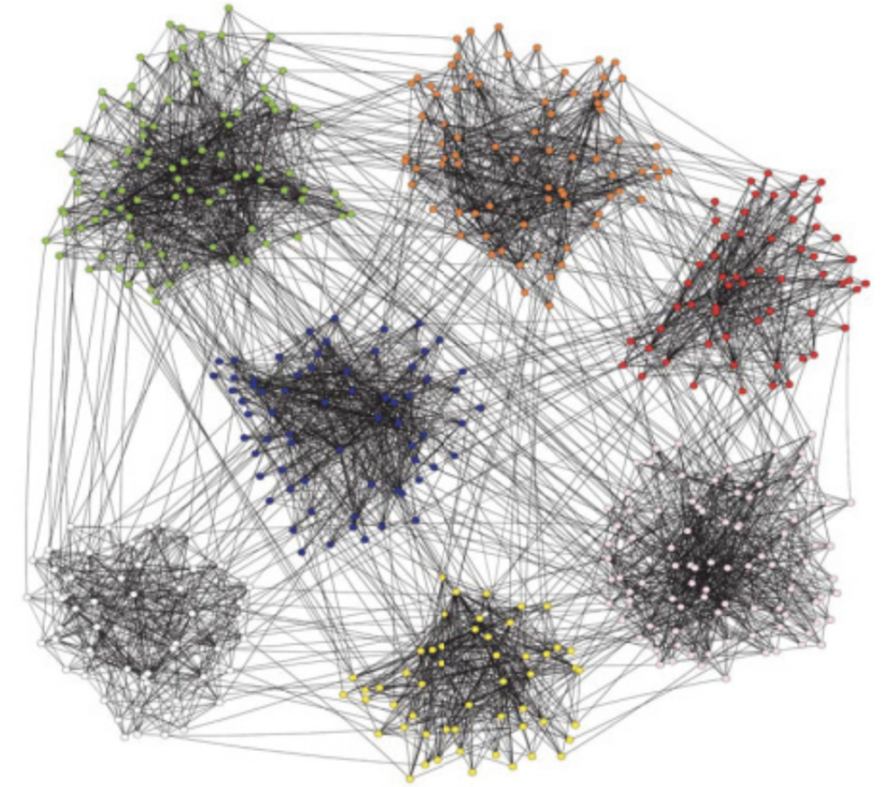
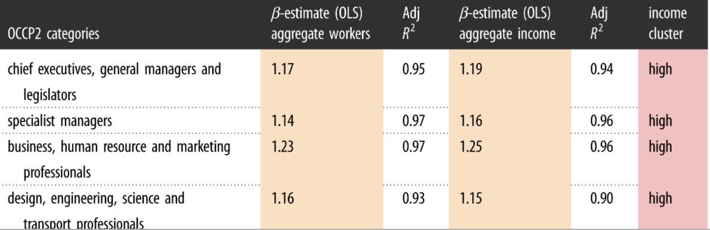
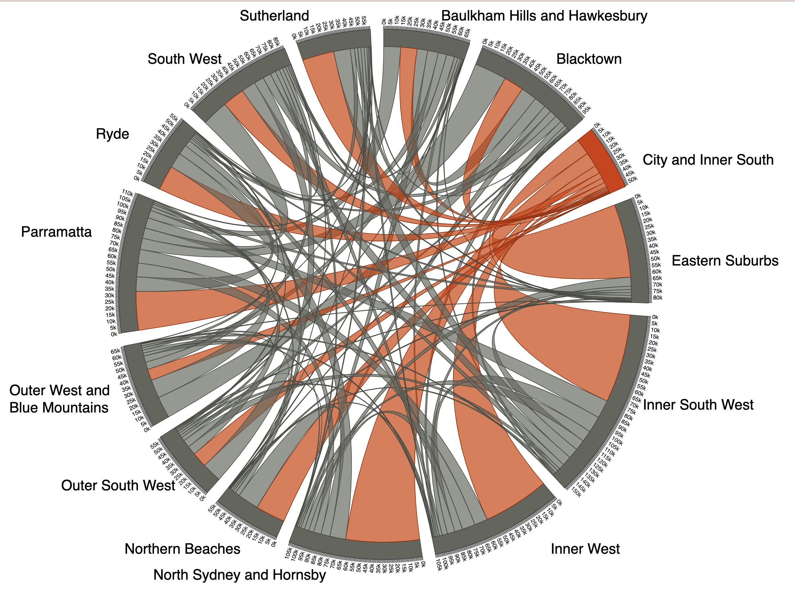

| Home | Research | News | Teaching | Data & Code |
|---|
|  |  |  |
(Old but valid) Matlab Code for our 2011 paper in Physical Review E on Community Detection in Graphs using Singular Value Decomposition |
Code for our 2020 paper in Royal Society Open Science on Evidence for localization and urbanization economies in urban scaling |
Chord Diagram Visualizations for our 2020 paper in Urban Studies on Measuring polycentricity via network flows, spatial interaction and percolation |
|---|---|---|